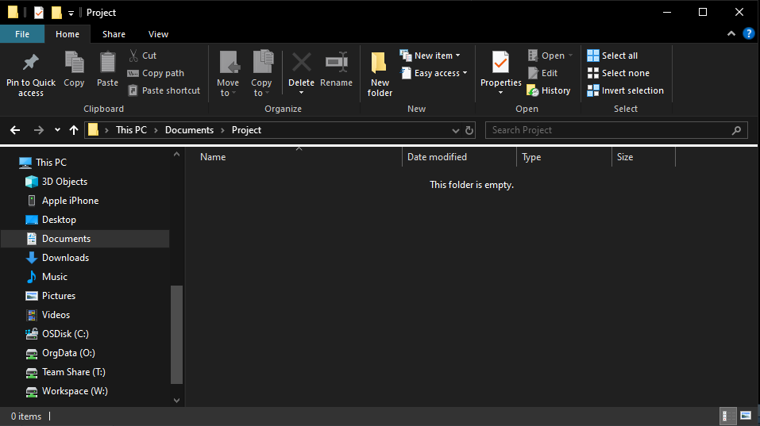
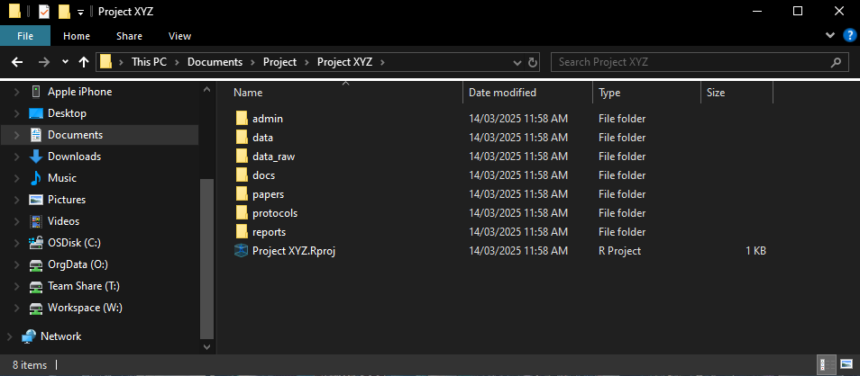
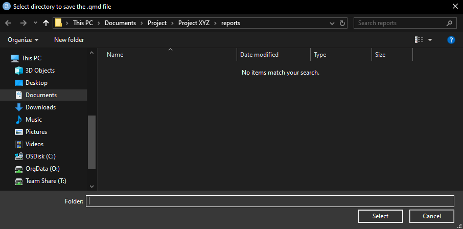
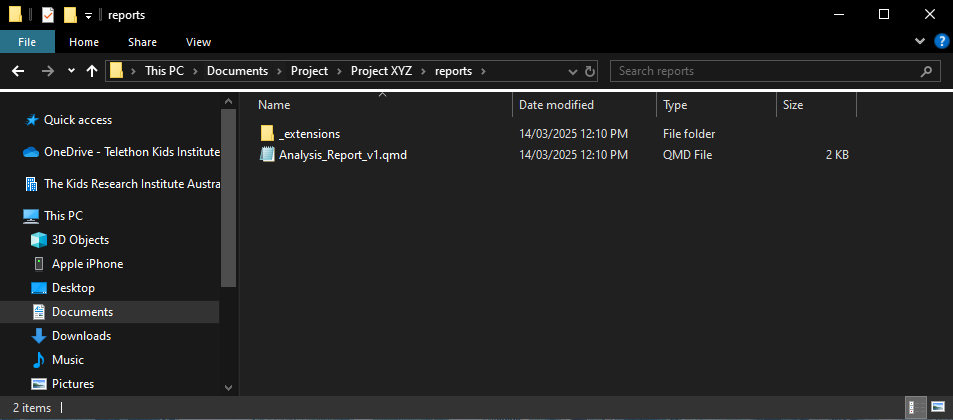
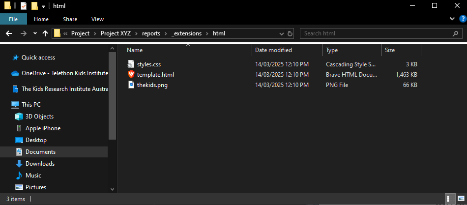
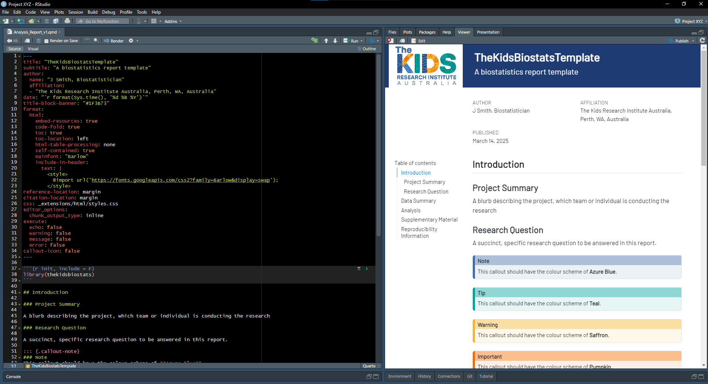

Project Workflows and Shiny Helpers/addins using `thekidsbiostats`
25 November 2025
Source:vignettes/project_workflow.Rmd
project_workflow.RmdOverview
Organising Statistical Workflows
The following section runs through the various functions for automating and/or simplifying regular/routine tasks performed through a project’s workflow. These functions allow you to create a sensible/structured directory for your project as well as simplifying (and standardising) the creation of Quarto templates using The Kids theming.
Step 1: Create folder structure
- Let’s create the following project:
- Project is called “Project XYZ”.
- Set
ext_name = "basic", as I will not be leveraging Targets in this project. - I would like all “default” folders (i.e. admin, data, data_raw, docs, reports).
- In addition to the above, I would like custom folders for “protocols” and “papers”.
create_project(project_name = "Project XYZ",
ext_name = "basic",
other_folders = c("protocols", "papers"))
Figure 1: Prompt on selecting overall project
folder.

Figure 2: Creation of project file
structure.
Step 2: Create (Quarto) markdown template
Quarto documents are versatile, reproducible file formats that supports Markdown and code chunks, enabling seamless blending of text, code, and outputs for reports, presentations, and interactive documents.
In this case, we would like to name the report “Analysis_Report_v1”.
create_template(file_name = "Analysis_Report_v1",
ext_name = "html")
Figure 3: Prompt on selecting where to save
analysis report.

Figure 4: Creation of skeleton report, with
associated styling (in /_extensions).

Figure 5: Supporting files created for the
themed html document.

Figure 6: Rendered html Quarto report.
Enhancing Report Readability Using Add-Ins
Reproducibility Information
sessionInfo()
#> R version 4.5.2 (2025-10-31)
#> Platform: x86_64-pc-linux-gnu
#> Running under: Ubuntu 24.04.3 LTS
#>
#> Matrix products: default
#> BLAS: /usr/lib/x86_64-linux-gnu/openblas-pthread/libblas.so.3
#> LAPACK: /usr/lib/x86_64-linux-gnu/openblas-pthread/libopenblasp-r0.3.26.so; LAPACK version 3.12.0
#>
#> locale:
#> [1] LC_CTYPE=C.UTF-8 LC_NUMERIC=C LC_TIME=C.UTF-8
#> [4] LC_COLLATE=C.UTF-8 LC_MONETARY=C.UTF-8 LC_MESSAGES=C.UTF-8
#> [7] LC_PAPER=C.UTF-8 LC_NAME=C LC_ADDRESS=C
#> [10] LC_TELEPHONE=C LC_MEASUREMENT=C.UTF-8 LC_IDENTIFICATION=C
#>
#> time zone: UTC
#> tzcode source: system (glibc)
#>
#> attached base packages:
#> [1] stats graphics grDevices utils datasets methods base
#>
#> other attached packages:
#> [1] thekidsbiostats_1.6.0 extrafont_0.20 flextable_0.9.10
#> [4] gtsummary_2.4.0 lubridate_1.9.4 forcats_1.0.1
#> [7] stringr_1.6.0 dplyr_1.1.4 purrr_1.2.0
#> [10] readr_2.1.6 tidyr_1.3.1 tibble_3.3.0
#> [13] ggplot2_4.0.1 tidyverse_2.0.0
#>
#> loaded via a namespace (and not attached):
#> [1] gtable_0.3.6 xfun_0.54 bslib_0.9.0
#> [4] htmlwidgets_1.6.4 tzdb_0.5.0 vctrs_0.6.5
#> [7] tools_4.5.2 generics_0.1.4 pkgconfig_2.0.3
#> [10] data.table_1.17.8 RColorBrewer_1.1-3 S7_0.2.1
#> [13] desc_1.4.3 uuid_1.2-1 lifecycle_1.0.4
#> [16] compiler_4.5.2 farver_2.1.2 textshaping_1.0.4
#> [19] janitor_2.2.1 snakecase_0.11.1 httpuv_1.6.16
#> [22] fontquiver_0.2.1 fontLiberation_0.1.0 htmltools_0.5.8.1
#> [25] sass_0.4.10 yaml_2.3.10 Rttf2pt1_1.3.14
#> [28] extrafontdb_1.1 pillar_1.11.1 pkgdown_2.2.0
#> [31] later_1.4.4 jquerylib_0.1.4 openssl_2.3.4
#> [34] cachem_1.1.0 mime_0.13 fontBitstreamVera_0.1.1
#> [37] tidyselect_1.2.1 zip_2.3.3 digest_0.6.39
#> [40] stringi_1.8.7 labelled_2.16.0 fastmap_1.2.0
#> [43] grid_4.5.2 cli_3.6.5 magrittr_2.0.4
#> [46] patchwork_1.3.2 withr_3.0.2 gdtools_0.4.4
#> [49] scales_1.4.0 promises_1.5.0 timechange_0.3.0
#> [52] rmarkdown_2.30 officer_0.7.1 otel_0.2.0
#> [55] hms_1.1.4 askpass_1.2.1 ragg_1.5.0
#> [58] shiny_1.11.1 evaluate_1.0.5 haven_2.5.5
#> [61] knitr_1.50 rlang_1.1.6 Rcpp_1.1.0
#> [64] xtable_1.8-4 glue_1.8.0 xml2_1.5.0
#> [67] rstudioapi_0.17.1 jsonlite_2.0.0 R6_2.6.1
#> [70] systemfonts_1.3.1 fs_1.6.6 shinyFiles_0.9.3